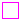

Icons for Blocks
Extends from Modelica.Icons.IconsPackage (Icon for packages containing icons).
| Name | Description |
|---|---|
| Basic graphical layout of input/output block | |
|  BooleanBlock | Basic graphical layout of Boolean block |
| Graphical layout of discrete block component icon | |
| IntegerBlock | Basic graphical layout of Integer block |
| Basic graphical layout of logical block |
Basic graphical layout of input/output block
Block that has only the basic icon for an input/output block (no declarations, no equations). Most blocks of package Modelica.Blocks inherit directly or indirectly from this block.
Basic graphical layout of Boolean block
Block that has only the basic icon for an input/output, Boolean block (no declarations, no equations).
Graphical layout of discrete block component icon
Block that has only the basic icon for an input/output, discrete block (no declarations, no equations), e.g., from Blocks.Discrete.
Basic graphical layout of Integer block
Block that has only the basic icon for an input/output, Integer block (no declarations, no equations).
Basic graphical layout of logical block
Block that has only the basic icon for an input/output, Boolean block (no declarations, no equations) used especially in the Blocks.Logical library.
Automatically generated Fri Oct 02 11:08:09 2015.